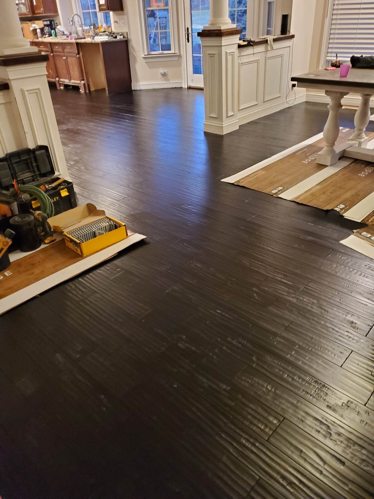

Installation Process
Installing floors and stairs can be done with a variety of wood types. The decision on the best type of floor is completely up to the customer. Installation is a precise process that must be handled with care to ensure proper fitting and functionality. Event ensures the flooring and stairs are fitted according to the customer's preferences and needs.


